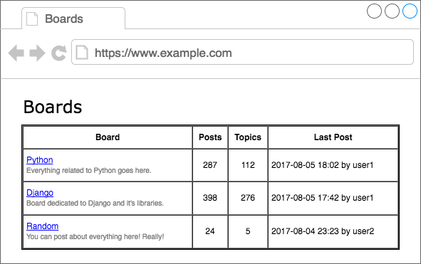
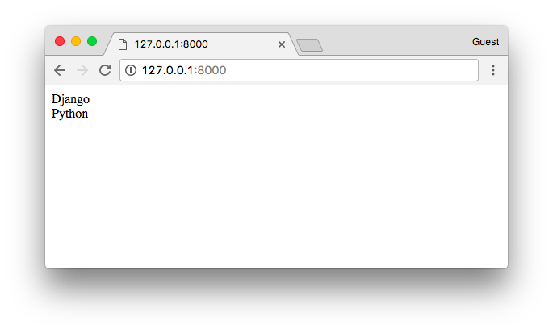

Django入门指南-第5章：第一个视图函数
目前我们已经有一个视图函数叫home,这个视图在我们的应用程序主页上显示为“Hello，World！”
myproject/urls.py
from django.conf.urls import url
from django.contrib import admin
from boards import views
urlpatterns = [
url(r'^$', views.home, name='home'),
url(r'^admin/', admin.site.urls),
]
boards/views.py
from django.http import HttpResponse
def home(request):
return HttpResponse('Hello, World!')
我们可以从这里开始写。如果你回想起我们的原型图，图5显示了主页应该是什么样子。我们想要做的是在表格中列出一些版块的名单以及它们的描述信息。

首先要做的是导入Board模型并列出所有的版块
boards/views.py
from django.http import HttpResponse
from .models import Board
def home(request):
boards = Board.objects.all()
boards_names = list()
for board in boards:
boards_names.append(board.name)
response_html = '<br>'.join(boards_names)
return HttpResponse(response_html)
结果就是这个简单的HTML页面：

等等，我们在这里先停一下。真正的项目里面我们不会这样去渲染HTML。对于这个简单视图函数，我们做的就是列出所有版块，然后渲染部分是Django模板引擎的职责。